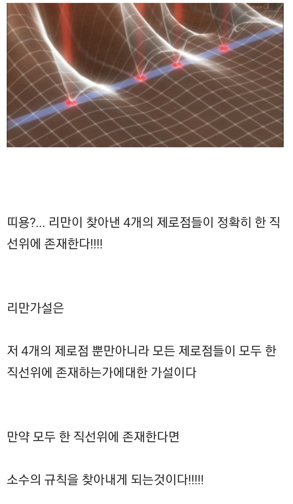
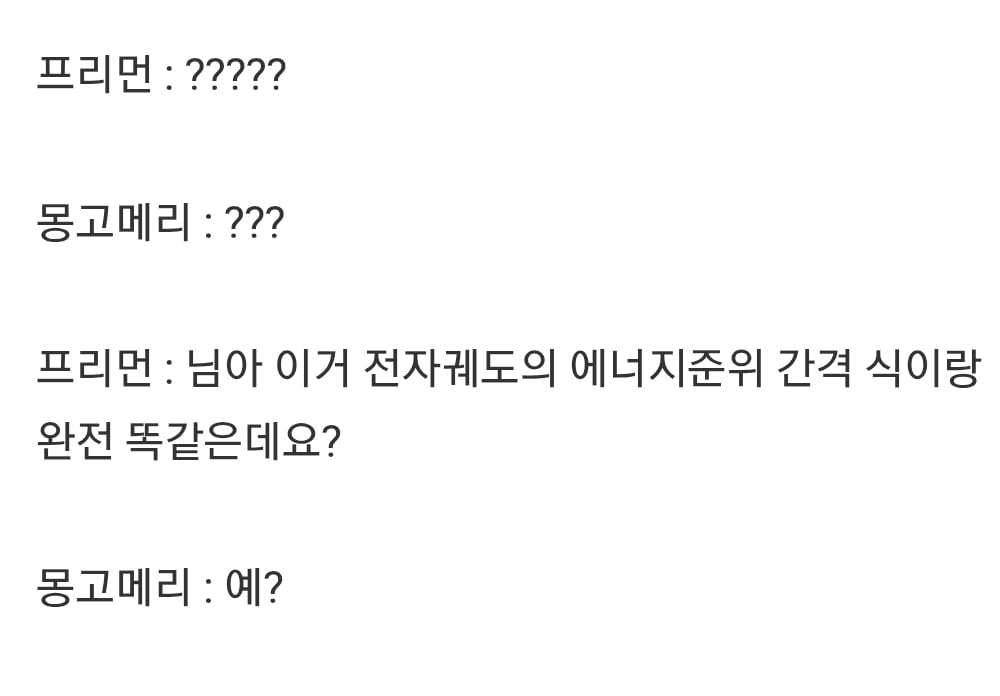
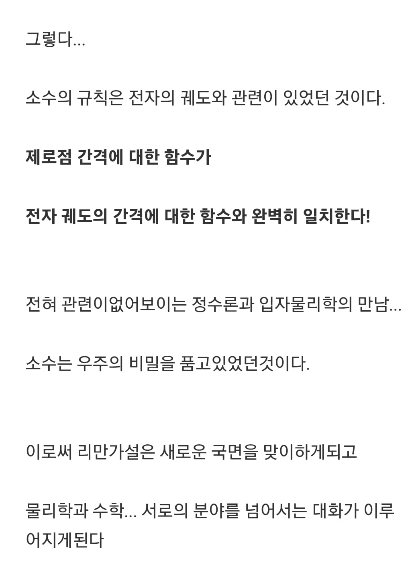
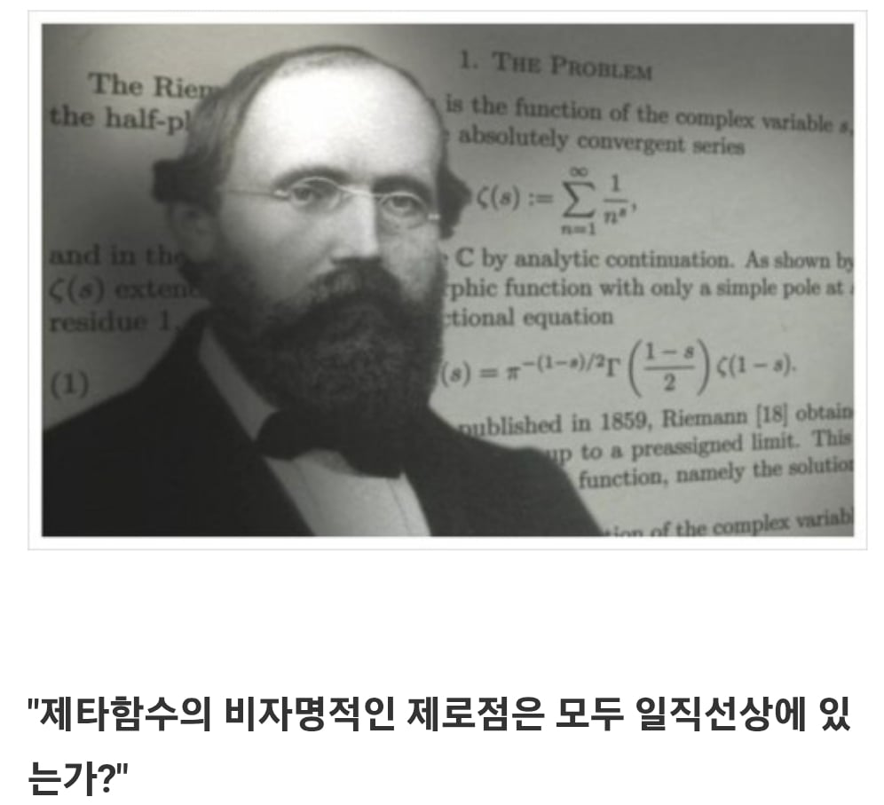

응애 나 초등학생
제로섬인지 제로투인지가 내 계좌도 해결해주나요
님이 풀면 상금 받아서 해결된다는거임
뭔소린지 모르겠는데 쓰리썸은 어떻습니까
근데 제로점은 일본다큐에서 그대로 가져오면서 작성자가 쓴거같고 0점이면 영점아닌가
숫자만이 우주를 이룬다
지 두 눈으로 똑똑히 봤당께요
중학생 수준 수학으로는 제타함수의 정의조차 이해할 수가 없음ㅋㅋ 흔히 보는 합이나 곱 형태의 식으로는 0이 나올 수조차 없다
아 중학생이 아니라서 이해가 안되네
그래서 저걸로 물 끓이나요?
진짜 난 빡대가리인갑다
첫문장부터 이해를 못함
소수가 무작위로 나옴?
ㅇㅇ
내 정신연령은 5살이니까 눈높이좀 맞춰주셈
첫줄 까지 이해함
팩트는,
그딴거 증명해도 월급 안올라가고, 인류의 삶의 질이 윤택해지진 않는다.
추후에는 윤택해 질 수 있다
너가 모르던 수학계 난제들이 해결됨으로써
무선통신장치, GPS 등을 이용 할 수 있는 것이 예시
양자역학덕분에 너가 폰으로 개드립할수있는거얌
윤택해지도록 만드는 재료가 되는거지
존나 뜬금없이 이걸로 핵융합이나 뭐 기타등등 나아질수도있고 ㄹㅇ어이없이ai 에 그냥 넣고 돌렸더니 성능이 갑자기 기하급수적으로좋아지고 그럴수도있음 모르는일임
저걸 기반으로 산업이나 실생활에서 쓸 기술이 나오는거임.
이런애들만 있었으면 아직도 빗살무늬토기 만들고있었음
???:빗살무늬 빼도 니인생엔 아무런 도움이 안된다는거임
팩트가 아니라 니 희망이겠지
팩트라는 말 쓰는 애들 보면 죄다 지 뇌피셜을 팩트라고 써놓음
팩트 영어로 어떻게 쓰는지는 아냐? 그거 안다고 월급 안올라가는데 ㅋㅋ
네 삶만 변함 없는 게 팩트임

아...완벽히 이해했어
그래서 내 점심 메뉴는 뭐먹으면 됨?
요즘 초등학생은 뭐하고 노냐? 난 그수준같은되

여기가 개드립초등학교 구나
그래서 저걸로 뭘 할수 있는거야
터빈을돌려 물을 끓일수 있음!
오!


그래서 저거 이용하면 워프드라이브 쓸 수 있나영
그러니까 소수 0.1 0.2 0.3..... 이게 일렬로 늘어섰다는건데 그게 뭐 어쨌다구요?
이해하기쉬운 초전도체나 하자. 도파민은 그게 좋아
그래서 삼체 언제 쳐들어옴?
와 리만 브라더스!
???: 완벽하게 이해했어 (이해 못했음)